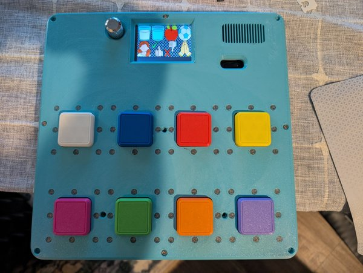
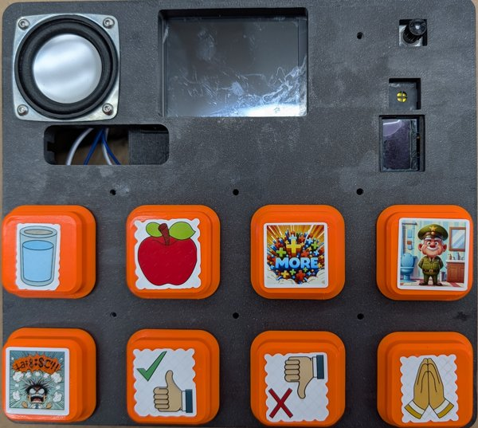
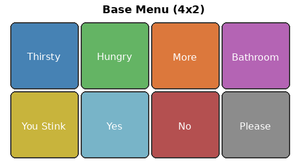
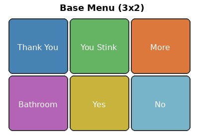
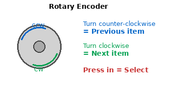
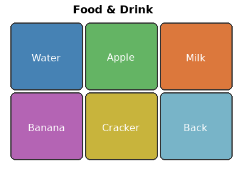
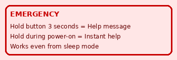

This device helps people communicate by pressing buttons or selecting items on a screen. Each button plays a spoken word or phrase through the speaker. No reading is required to use it — pictures and colors guide the user.

Device with color LCD screen and physical buttons

Device with picture-labeled buttons and speaker
Plug in the USB cable or connect the battery. The device starts automatically — you will hear a brief startup tone or see the screen light up within a few seconds.
When the device turns on, it shows the Base Menu — the home screen with the most important communication options:

Base Menu — 4-column layout (touch screen devices)

Base Menu — 3-column layout (smaller screens)
Each button does one thing:
Simply touch the picture you want. The device will speak the word immediately.
Press the large colored button that matches the picture you want. Each button is in a fixed position — they always do the same thing.
Some devices use a knob (rotary encoder) instead of buttons:

How to use the rotary encoder
On devices with a small screen, you will see three items at once — the previous item, the current selection (highlighted), and the next item. This helps you know where you are in the list.
The "More" button opens a submenu with additional choices. For example, pressing "More" on the home screen opens the Food & Drink menu:

Food & Drink submenu
Every submenu has a "Back" button that takes you to the previous screen. On encoder devices, it is always the last item in the list.

The device has a built-in emergency feature that plays a help message:
| Situation | What to Do | Response Time |
|---|---|---|
| Device is on and active | Hold the button for 3 seconds | Plays after 3 seconds |
| Device is asleep | Press and hold the button | Wakes up and plays (~1.2 seconds) |
| Device is off / just turning on | Hold the button while it powers on | Plays as soon as audio is ready (~1.2 seconds) |
Color screens show pictures for each button. When you scroll with the encoder, a yellow highlight box shows which button is selected. A text hint appears at the bottom of the screen showing what the current button will say.
Small monochrome (black and white) screens show text instead of pictures. The screen displays three items at once:
| Hungry | Previous item (dimmed) |
| Thirsty | Current selection (highlighted) |
| Bathroom | Next item (dimmed) |
Turn the encoder to scroll through the list. The highlighted item in the middle is what will be spoken when you press the button.
To save battery, the device goes to sleep after 2 minutes of no activity. The screen turns off and the device enters a low-power state.
| Do | Why |
|---|---|
| Press the button firmly | Makes sure the device registers the press |
| Wait for the sound to finish | The next press works after the current sound ends |
| Use the emergency button when overwhelmed | It tells people to give you space |
| Do | Avoid |
|---|---|
| Keep the device within reach | Putting it away "for later" |
| Model by pressing buttons yourself | Only giving the device during specific times |
| Respond to every communication attempt | Ignoring presses because you're busy |
| Keep the layout consistent | Changing buttons frequently |
| Practice the emergency button together | Assuming the user knows how without practice |
| Start with a few buttons | Overwhelming with too many choices |
| Problem | Solution |
|---|---|
| No sound when pressing buttons | Check volume in config.txt. Make sure the speaker is not blocked. Try unplugging and replugging USB. |
| Device won't turn on | Check the USB cable connection. Try a different cable or power source. |
| Screen is blank | The device may be asleep. Press the encoder button or any button to wake it. Wait 5 seconds. |
| Wrong button makes wrong sound | The menu file may have been edited incorrectly. Contact the person who configured the device. |
| Encoder scrolls the wrong way | Open config.txt and change encoder_direction_flip to true (or false). |
| Speech is too fast to understand | Open config.txt and set playback_speed = 70 (70% = slower). Try values between 50 and 100. |
| Device sleeps too quickly | Open config.txt and increase sleep_timeout (e.g., sleep_timeout = 300 for 5 minutes). |
| Emergency button doesn't work | Make sure emergency_push_enabled = true in config.txt and that the emergency sound file exists. |
| Action | Touch Screen | Physical Buttons | Rotary Encoder |
|---|---|---|---|
| Select an item | Touch the picture | Press the button | Turn to highlight, press to select |
| Open submenu | Touch "More" | Press "More" button | Select "More" item |
| Go back | Touch "Back" | Press "Back" button | Select "Back" item |
| Emergency | Hold boot button 3s | Hold any button 3s | Hold encoder 3s |
| Wake from sleep | Touch screen | Press any button | Turn or press encoder |
AAC Communication Device — User Manual
Version 3.0 — March 2026
This device helps people communicate. Every press is a voice.